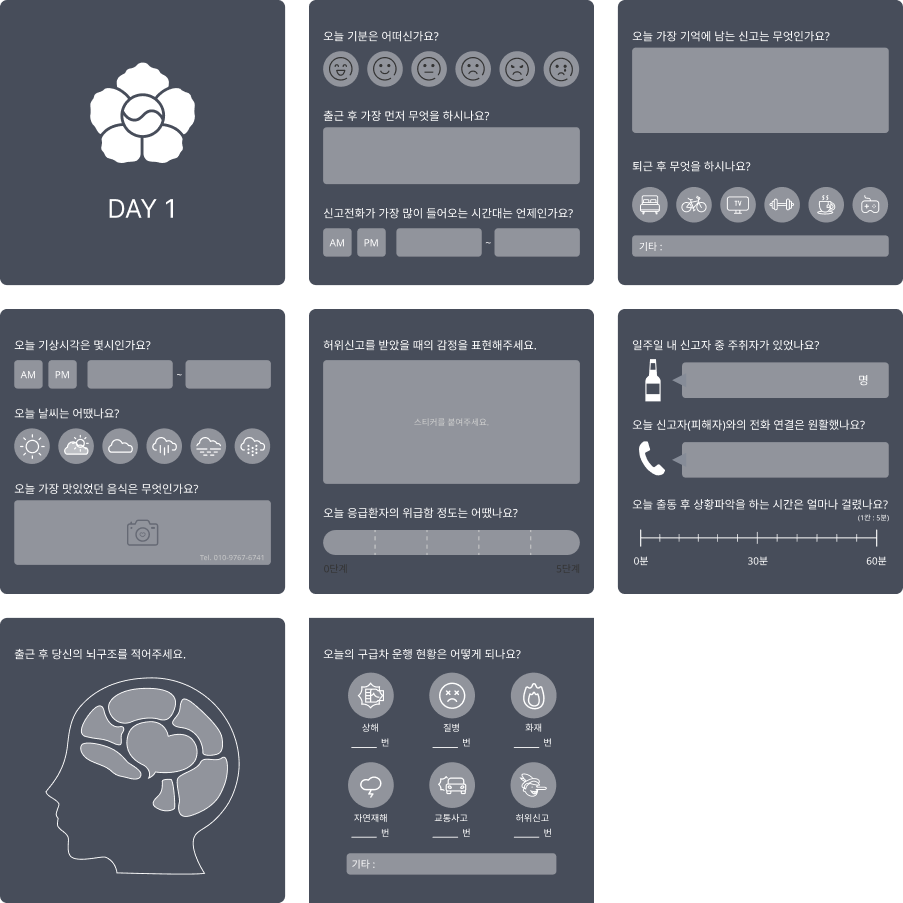

팀프로젝트로 제작한 허위신고 문제 해결 서비스 통화 음성을 분석하여 신고자가 허위신고를 하고 있는 구분하는 서비스
2022.11 - 2022 .12
Figma, AI
60%
2022년 119 허위신고 출동 현황의 985건 중 허위신고 과태료 부과(대응건수) 현황은 0건입니다. 또한 2022년 112 허위신고 현황 4235건 중 처벌받은 경우는 2956건으로 전체의 60%~70% 수준입니다.
※ 허위신고 음성 분석 방법
※ 남성
| 허위신고 | 실제신고 | |
|---|---|---|
| 음 높이 | 179.36 [Hz] | 235.91 [Hz] |
| 초당 음절 수 | 47.71 [SPS] | 53.56 [SPS] |
| 허위신고 | 실제신고 | |
|---|---|---|
| 음 높이 | 179.49 [Hz] | 230.98 [Hz] |
| 초당 음절 수 | 47.1 [SPS] | 64.86 [SPS] |
※ 여성
| 허위신고 | 실제신고 | |
|---|---|---|
| 음 높이 | 235.09 [Hz] | 318.01 [Hz] |
| 초당 음절 수 | 39.00 [SPS] | 62.25 [SPS] |
| 허위신고 | 실제신고 | |
|---|---|---|
| 음 높이 | 246.33 [Hz] | 306.76 [Hz] |
| 초당 음절 수 | 32.35 [SPS] | 72.00 [SPS] |
남성과 여성의 음성 분석 결과 허위신고와 실제신고에서 음높이와 초당 음절 수에 차이가 나타나는 것을 확인 할 수 있습니다.
통화 중 음성 분석을 통하여 허위신고를 구별할 수 있습니다. 분석을 바탕으로 현장을 파악하기 위한 수색 시간을 단축 시킵니다.
나눔스퀘어
Regular, Bold, ExtraBold
#354054
#F8F8F8
#FFFFFF
#19D6EA
#FF5959
Contextual Inquiry를 바탕으로 제작한 Cultural Probes 경찰관과 소방관들을 대상으로 Cultural Probes 진행
통화 중의 음성을 분석하여 음높이,
초당 음절 수가
특정 수치 이하일 경우
허위신고 확률이
몇퍼센트인지 알려줍니다.
경찰 및 소방관이 해당 연락처의
허위신고 현황을 확인 할 수 있으며,
허위신고에 대한 경고를 보낼 수 있습니다.
신고 간편화에 따른 허위신고를 방지하고자
긴급전화 화면에 허위신고 과태료에 대한
경고문을 추가하였습니다.